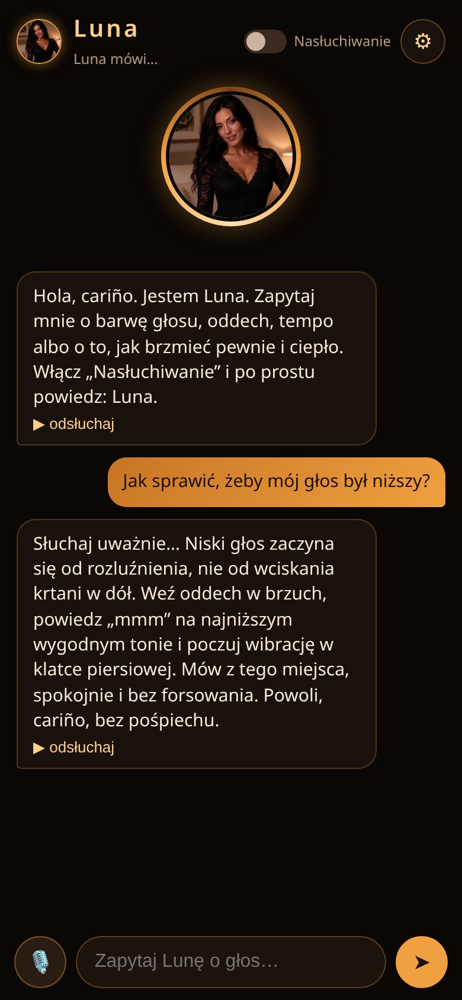
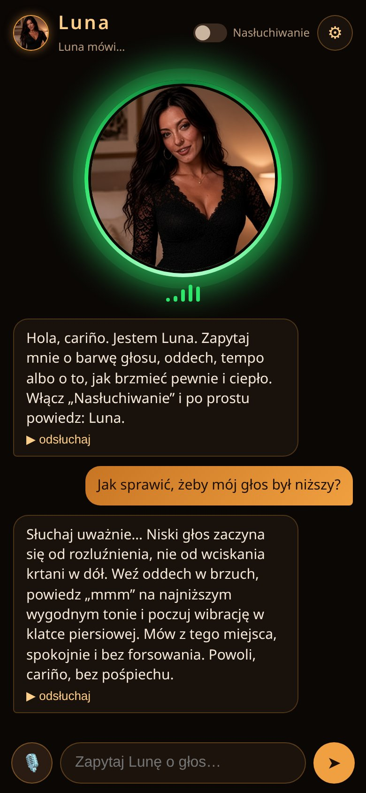

Ciepły, niski głos z hiszpańskim urokiem. Luna rozmawia z Tobą po polsku i krok po kroku uczy, jak brzmieć pewnie, spokojnie i atrakcyjnie.
„Hola, cariño. Jestem Luna, sztucznie stworzona asystentka AI. Zapytaj mnie o swój głos.”
Pytasz tekstem albo głosem, a Luna odpowiada krótko, konkretnie i czyta odpowiedź na głos.
Naciśnij mikrofon i po prostu zapytaj. Luna odpowiada niskim, cichym głosem z hiszpańskim akcentem, a wysokość i głośność ustawisz sam.
Włącz nasłuchiwanie i powiedz „Luna”. Od razu usłyszysz „Słyszę cię, cariño”, a potem możesz zadać pytanie.
Gdy Luna mówi albo słucha, jej okrągły awatar powiększa się i świeci zieloną, pulsującą obwódką. Od razu widzisz, co się dzieje.
Luna ma przygotowane wskazówki na 37 tematów: od pogłębiania barwy po dbanie o zdrowie strun głosowych.
Bez sklepu z aplikacjami. Otwierasz w przeglądarce, dodajesz do ekranu głównego i Luna uruchamia się jak zwykła aplikacja.
W ustawieniach wybierzesz głos, obniżysz go, ściszysz i włączysz hiszpańskie wstawki: hola, cariño, mi amor.
Luna jest zalotna, ale zawsze elegancka. Mówi krótko, spokojnie i na temat, bez list i zbędnych słów.
Czat, mikrofon i awatar, który ożywa, kiedy Luna mówi.


Przykładowe odpowiedzi na częste pytania.
Zajmie Ci to kilkanaście sekund. Nie potrzebujesz sklepu z aplikacjami.
Przy pierwszym użyciu mikrofonu przeglądarka zapyta o zgodę. Zezwól, żeby Luna mogła Cię słyszeć.
Najlepiej w Chrome, na Androidzie i na komputerze. Rozpoznawanie mowy zależy od przeglądarki, więc w innych może działać gorzej albo wcale. Czat tekstowy i odpowiedzi czytane na głos działają szerzej.
Tak, do rozmowy głosowej i słowa „Luna”. Przeglądarka poprosi o zgodę przy pierwszym użyciu. Bez mikrofonu możesz rozmawiać z Luną tekstem.
Nie. Słowo wybudzające „Luna” działa tylko wtedy, gdy aplikacja jest otwarta na ekranie i masz włączone „Nasłuchiwanie”. Po zminimalizowaniu albo zablokowaniu telefonu Luna nie słucha.
Nie. Luna podpowiada ćwiczenia i dobre nawyki, ale przy długotrwałej chrypce, bólu albo problemach z mową warto pójść do specjalisty.
Powiedz „Luna”, a ona odpowie: „Słyszę cię, cariño”.